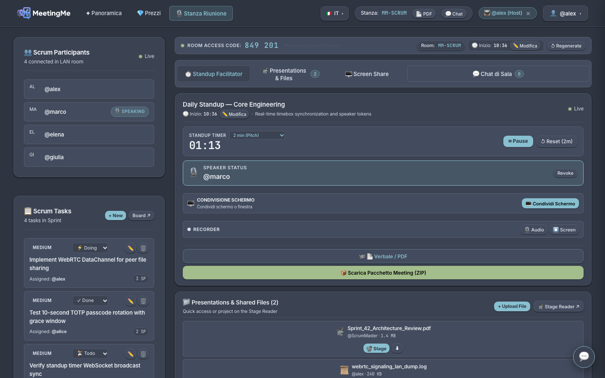
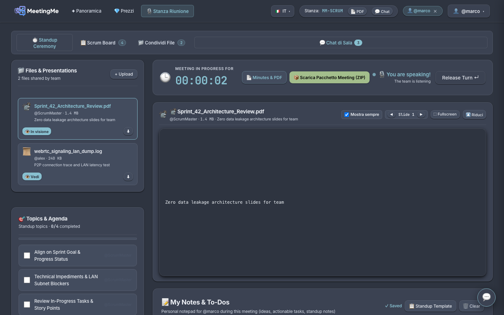
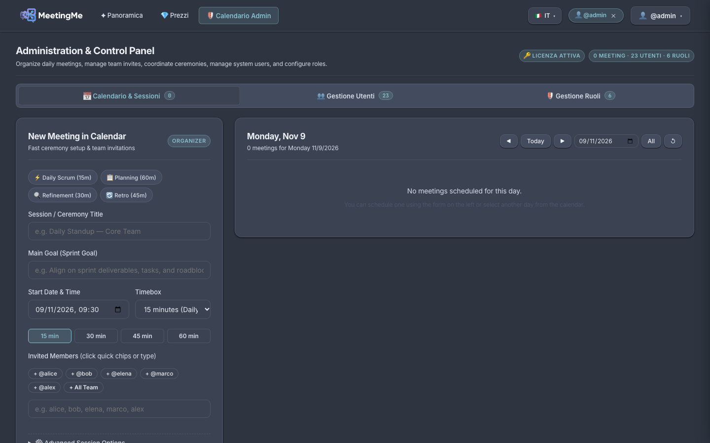

Air-gapped standups for private teams.
MeetingMe runs daily standups inside your local network. No audio, slides, notes or tasks ever touch a third-party cloud.
Funziona a router scollegato
Chiavi effimere solo in RAM
Streaming socket istantaneo
Firma di integrità CRC32
Segreto bancario & PCI-DSS
Subnet isolate senza uscita WAN
Dati sanitari GDPR Art. 9
Delibere e verbali sigillati
Zero cloud exposure by physical design.
Every piece of software in MeetingMe operates on local memory buffers and subnet sockets.
Ephemeral 10-Second Verbal Passcode Rotation
Meeting rooms use rolling TOTP seeds generated on the host machine. Passcodes expire every ten seconds, disarming unauthorized attendees from joining late.
Direct WebRTC DataChannel
Files, slide decks and code traces stream directly from peer to peer with zero outside egress.

In-Line Presentation Stage
Participants view slide decks, diagrams and logs synchronously in their browser without external viewers.

Certified Offline Summary & Archival
At the close of the standup, MeetingMe packages collective participant notes, completed task story points and verbal minutes into a certified standalone A4 document and local ZIP archive.
Casi d'uso e impatto operativo.
Dalla collaborazione live alla diagnostica dei processi: come MeetingMe trasforma le riunioni aziendali in asset decisionali.
Collaborazione Interattiva in Tempo Reale
Coinvolgi ogni membro del team con condivisione schermo del relatore senza installazioni, chat istantanea WebRTC DataChannel e note condivise sincronizzate al millisecondo nella rete locale.
Maggiore Controllo e Governance Aziendale
Garantisci la sovranità assoluta dei dati aziendali. Nessun pacchetto esce verso server cloud terzi, con rotazione dinamica dei passcode d'accesso e controllo rigoroso su chi partecipa all'interno della LAN.
Capire dove si Sbaglia nei Meeting
Elimina riunioni infinite e discussioni dispersive grazie al timeboxing rigido di 120s per oratore e al monitoraggio visivo dei tempi di parola, individuando colli di bottiglia e dispersioni.
Sistema di Feedback e Retrospettiva Continua
Raccogli note collaborative, blocchi operativi ed esiti decisionali in tempo reale, generando automaticamente a fine incontro un verbale A4 sigillato e archivio ZIP certificato per il miglioramento continuo.
Tre Prospettive, Un'Unica Piattaforma Sovrana.
Dalla sala operativa dello Scrum Master alle postazioni di sviluppo e testing, fino alla governance centralizzata: scopri come MeetingMe protegge i dati sensibili ed elimina ogni dipendenza dal cloud.
Controllo Totale su Calendario, Utenti e Licenze
Il pannello Admin permette di coordinare tutte le cerimonie agili della subnet locale. Gli amministratori pianificano meeting, gestiscono gli account di sistema, assegnano ruoli con permessi granulari e controllano lo stato della licenza GitHub Gist in tempo reale.

Regia dello Standup, Condivisione Schermo & Timebox
Lo Scrum Master o Facilitatore conduce il meeting con strumenti professionali: timer per persona circolare, coda oratori arbitrata via token crittografico, condivisione dello schermo HD e rilascio automatico del pacchetto di chiusura con verbale A4 e file ZIP.
Postazione Sviluppatore, Note Sincrone & Chat di Stanza
I membri del team partecipano senza bisogno di credenziali cloud esterne: basta inserire il passcode vocale rolling comunicato in stanza. Seguono lo speaker corrente, modificano la Scrum Board, redigono note personali/condivise e interagiscono nella chat effimera integrata.
Three minutes replace twenty.
Strict timeboxes and token mediation prevent wandering discussions.
Engineered for restricted subnets.
Tested and verified in defense, banking, and air-gapped lab architectures.
Garanzie di Sicurezza: LAN Hub vs Piattaforme Cloud SaaS
Confronto di sicurezza e conformità legale tra MeetingMe e i software cloud tradizionali (Zoom, Teams, Slack).
| Criterio di Sicurezza | Piattaforme Cloud SaaS (Zoom, Teams, Slack) | MeetingMe LAN-First Hub |
|---|---|---|
| Egress & Transito Dati | ❌ Audio, slide e video inviati su server terzi (US Cloud) | ✅ 0 Byte all'esterno: transito puro LAN switch locale |
| Operatività Offline (Blackout WAN) | ❌ Servizio inaccessibile in assenza di connessione Internet | ✅ 100% operativo anche a cavo Internet WAN staccato |
| Persistenza & Ingestion AI | ❌ Dati e registrazioni memorizzati per analytics e AI ingestion | ✅ Zero persistenza remota: chiavi e socket effimeri in RAM |
| Sovranità Giuridica & Compliance | ❌ Rischio Cloud Act estero e sequestro dati transfrontaliero | ✅ Sovranità totale on-premise: report PDF/ZIP con hash CRC32 |